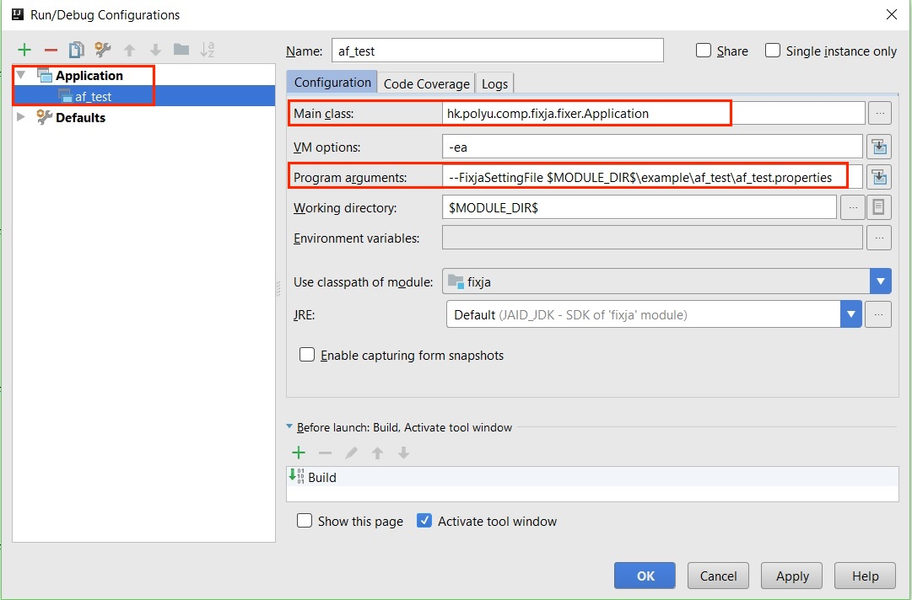
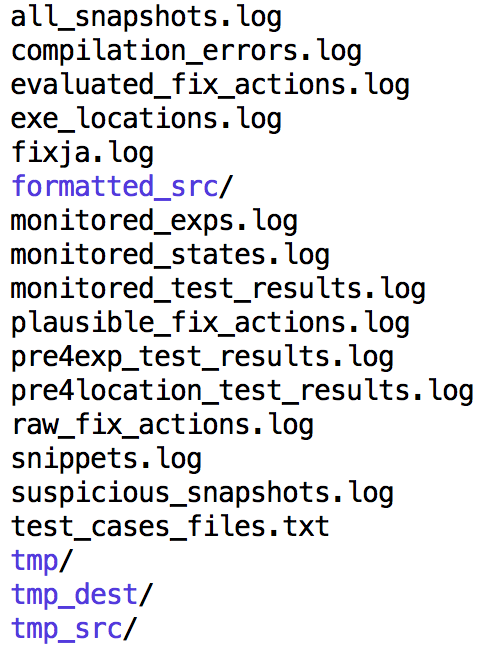

The JAID tool was developed using the IntelliJ IDEA IDE. It assumes that a JDK, named JAID_JDK, of version 1.8 or later has been configured in the IDE. You could add this JDK at File/Project Structures/Project Settings/Project/Project SDK. After the JDK has been properly configured, to open the JAID project in the IDE, go to File/Open, navigate to $JAID_DIR$, select fixja.iml, and clike on OK. Then the IDE should be able to successfully load all the other settings from fixja.iml, and you should be able to compile and run/debug JAID with ease.
Inputs required for JAID to run on a bug include the buggy program, a group of tests for the program, among which at least one test fails due to the bug-under-fixing, the signature of the method containing the bug, etc. These inputs can be passed to JAID through command line arguments or using a properties file. Section Command Line Arguments details all the command line arguments supported by JAID, as well as their meanings.
To run JAID on bugs from the Defects4J benchmark, please refer to instructions in README.md of the Experiment Scripts (included in the replication package).
An example (faulty) project is provided in folder $JAID_DIR$/example. You may modify the fixja.properties file to reflect the local settings on your machine and refer to the image below to add a Run/Debug Configuration for running/debugging JAID using the example. 
| Argument Name | Explanation |
|---|---|
| FixjaSettingFile | Full path to a properties file containing the settings for running JAID. When specified, other command line arguments are ignored. |
| Encoding | Encoding of the project source code files (Default: UTF8). |
| ExpToExclude | List of expressions that should NOT be used for program state monitoring (Default: Empty list). |
| JDKDir | Full path to the JDK installation. |
| LogLevel | Verbosity level of generated logs. Valid values: OFF, ERROR, WARN, INFO, DEBUG, TRACE, ALL. |
| ProjectRootDir | Full path to the project root directory. All other relative paths will be resolved against this path |
| ProjectSourceDir | List of relative paths to the project source directories, separated by path separators (; for Windows and : for Mac OS or Linux). |
| ProjectOutputDir | Relative path to the project output directory. |
| ProjectTestOutputDir | Relative path to the project test output directory. |
| ProjectLib | List of relative paths to the project libraries (e.g., jar files), separated by path separators (; for Windows and : for Mac OS or Linux). |
| ProjectTestSourceDir | List of relative paths to the project test source directories, separated by path separators (; for Windows and : for Mac OS or Linux). |
| ProjectTestsToInclude | List of tests that should be used for fixing. All tests will be used if not specified. Format: FullyQualifiedClassName;FullyQualifiedClassName#MethodName |
| ProjectTestsToExclude | List of tests that should NOT be used for fixing. No test will be excluded if not specified. Format: FullyQualifiedClassName;FullyQualifiedClassName#MethodName |
| ProjectExtraClasspath | List of extra classpaths. |
| MethodToFix | Method to fix. Format: MethodName(Type1,Type2)@FullyQualifiedPackageName.ClassName$InnerClassName. |
| TimeoutPerTest | Timeout in milli seconds for each test. |
| TargetJavaVersion | Source code target java version(Default: 1.8). |
| ProjectCompilationCommand | Command to compile the project. Only needed in special cases. |
| ProjectExecutionCommand | Command to execute the project. Only needed in special cases. |

From a user's point of view, two logs are the most important:Input tests are executed up to three times in this phase for fault localization. First, all the tests are executed to produce a list of program locations that are relevant to the failure under consideration. Next, tests are executed again, with state monitoring enabled, to identify expressions that are impure, or with side-effects. Last, pure expressions are used to abstract the program states during test executions. State snapshots are then constructed from the observed states and analyzed to pinpoint the likely fault locations.
In this phase, JAID generates fix actions targeting the most suspicious state snapshots and then produces candidate fixes by instantiating predefined fix schemas using fix actions, state snapshot expressions, and the old statement from the faulty method-to-fix.
All candidate fixes will be applied to the buggy program and checked against the input test cases. Only those that pass all test will be reported to the user, i.e., recorded in plausible_fix_actions.log.
JAID works on a pretty-printed version of the method-to-fix. Pretty-printing takes place before fault localization, and the result Java file is stored in $PROJECT_ROOT_DIR$/fixja_output/formatted_src.